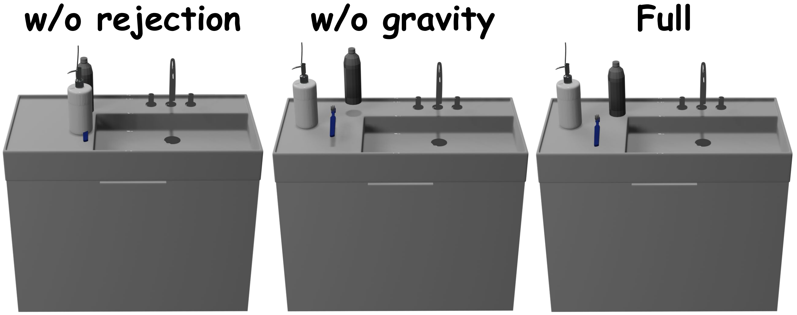
Figure 1: Additional ablation study.
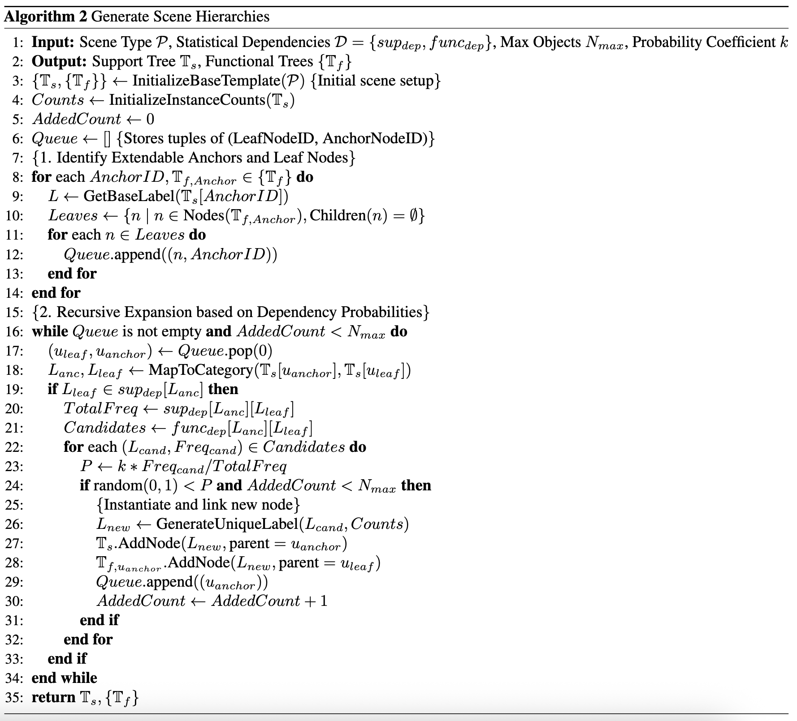
Figure 2: Process of generating scene hierarchies (support tree and functional trees).
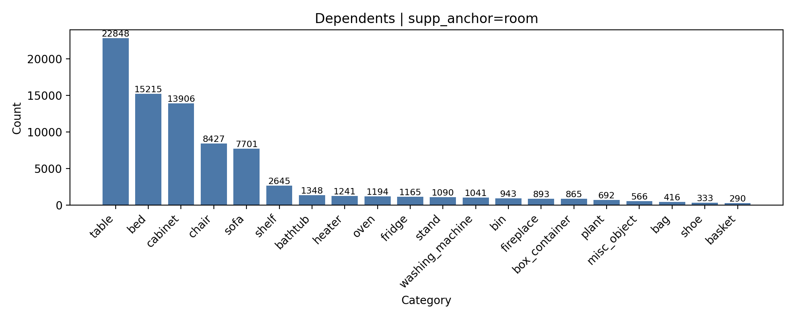
Figure 3: Distribution of dependents for floor as support anchor.
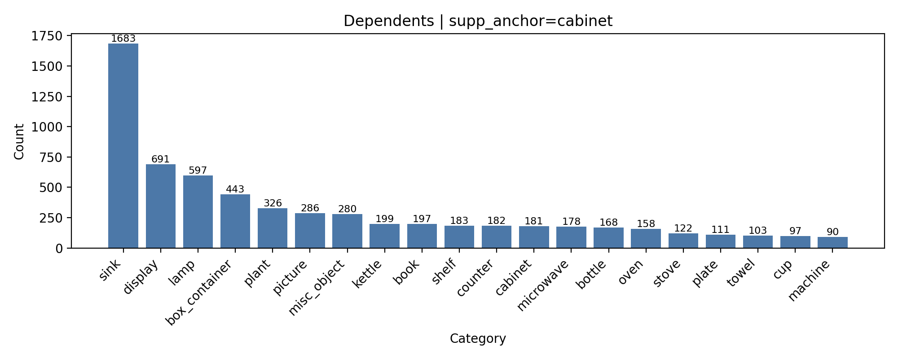
Figure 4: Distribution of dependents for cabinet as support anchor.
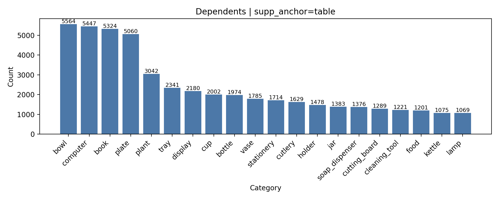
Figure 5: Distribution of dependents for table as support anchor.
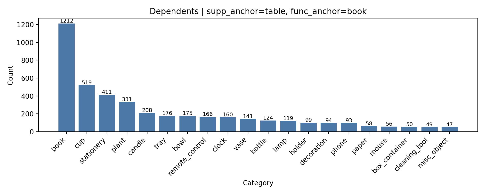
Figure 6: Distribution of dependents for table as support anchor and book as functional anchor.
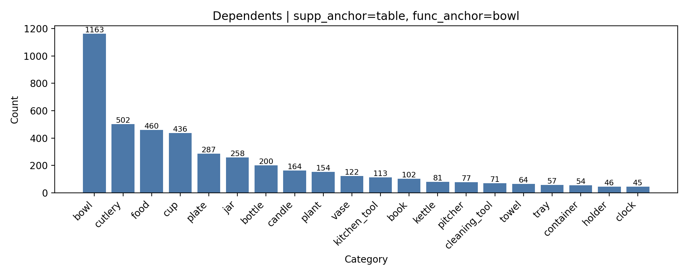
Figure 7: Distribution of dependents for table as support anchor and bowl as functional anchor.
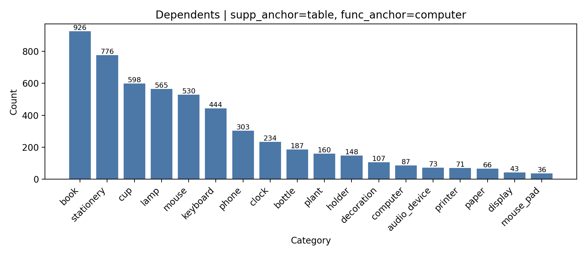
Figure 8: Distribution of dependents for table as support anchor and computer as functional anchor.
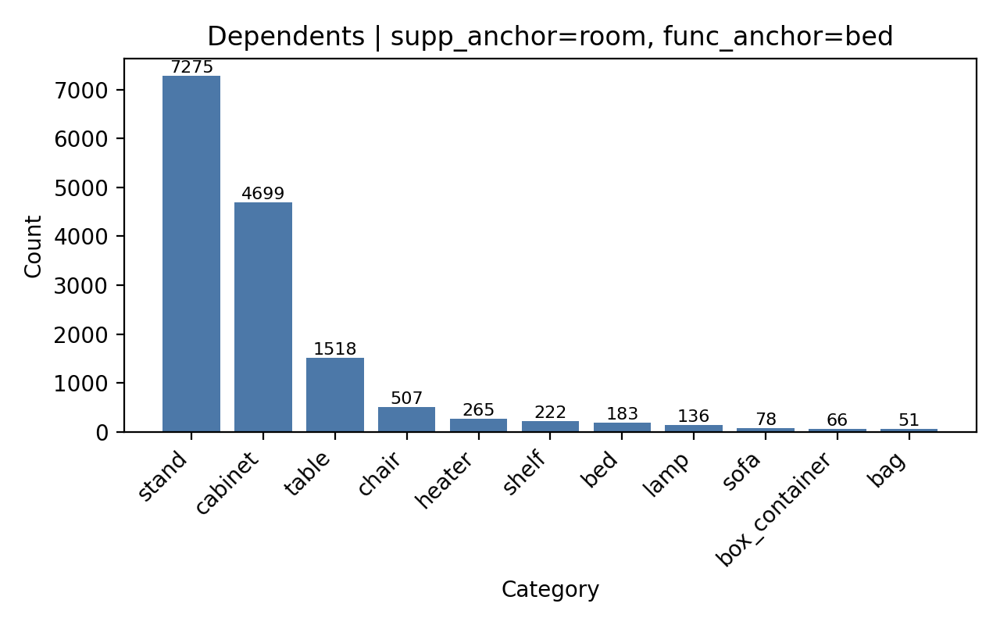
Figure 9: Distribution of dependents for floor as support anchor and bed as functional anchor.
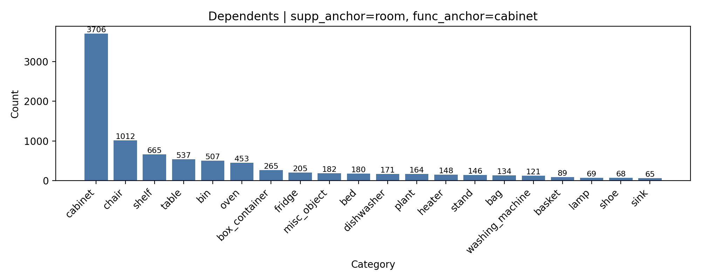
Figure 10: Distribution of dependents for floor as support anchor and cabinet as functional anchor.
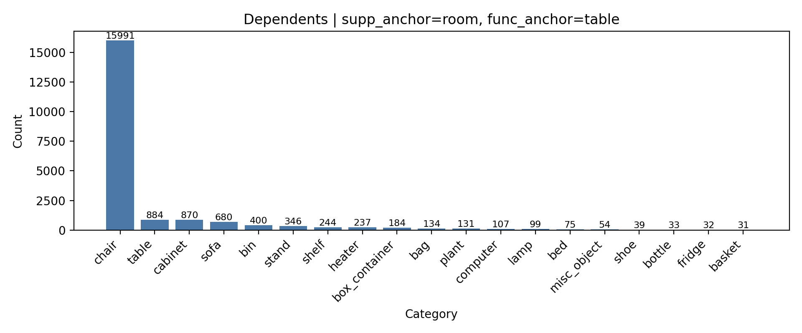
Figure 11: Distribution of dependents for floor as support anchor and table as functional anchor.